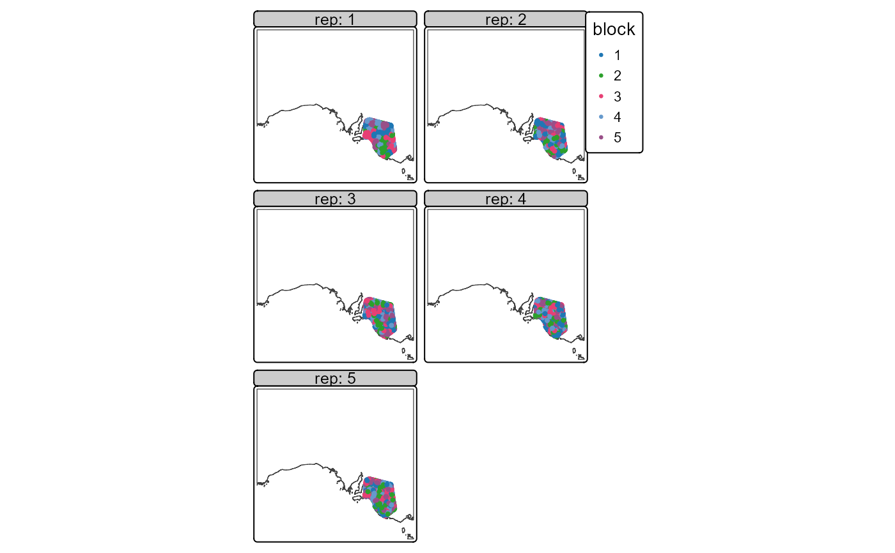
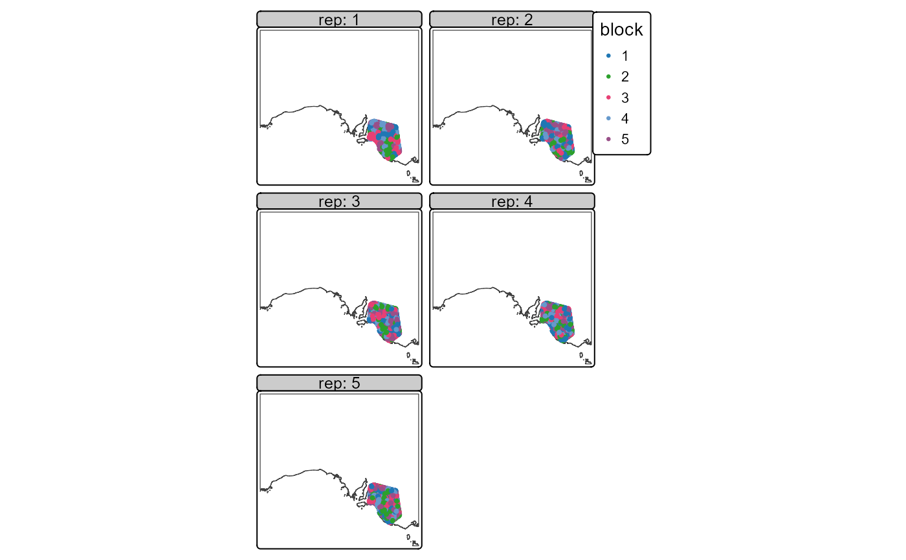

The background sampling includes code based on a Geographic Information Systems stack exchange answer by user Spacedman.
Usage
prep_sdm(
this_taxa = NULL,
out_dir = FALSE,
return_val = "path",
presence,
pres_col = "pa",
pres_val = 1,
pres_crs = 4326,
pres_x = "long",
pres_y = "lat",
pred_limit = TRUE,
limit_buffer = 0,
pred_clip = NULL,
predictors,
is_env_pred = TRUE,
terra_options = NULL,
cat_preds = NULL,
num_bg = 10000,
prop_abs = "abs",
many_p_prop = 2,
folds = 5,
spatial_folds = TRUE,
repeats = 1,
folds_div = seq(2.1, by = 0.1, length.out = folds),
max_repeat_corr = 0.9,
min_fold_n = 8,
hold_prop = 0.3,
stretch_value = 10,
dens_res = 1000,
reduce_env_thresh_corr = 0.9,
reduce_env_quant_rf_imp = 0.2,
do_gc = FALSE,
force_new = FALSE
)Arguments
- this_taxa
Character. Name of taxa. Only used to print some messages. Ignored if NULL
- out_dir
FALSE or character. If FALSE the result of prep_sdm will be saved to a temporary folder. If character, a file 'prep.rds' will be created at the path defined by out_dir.
- return_val
Character: "object" or "path". Both return a named list. In the case of "path" the named list is simply list(prep = out_dir). Will be set to "object" if
out_diris FALSE.- presence
Dataframe of presences with columns
pres_xandpres_y.- pres_col
Character. Name of column in
presencethat defines presence (1) or absence (0). Optional if only presence data is supplied.- pres_val
Numeric. Values in
pres_colthat represent presences. Optional if only presence data is supplied.- pres_crs
Anything that will return a legitimate crs when passed to the crs attribute of
sf::st_transform()orsf::st_as_sf().- pres_x, pres_y
Character. Name of the columns in
presencethat have the x and y coordinates- pred_limit
Limit the background points and predictions? Can be
TRUE(usepresenceto generate a minimum convex polygon to use as a limit. Not recommended as the points inpresencehave usually been filtered to very accurate spatial reliability and thus may be missing a large number of legitimate records);FALSE(the full extent of the predictors will be used); path to existing .parquet to use; or sf object.- limit_buffer
Numeric. Apply this buffer to
pred_limit. Only used ifpred_limitisTRUE. Passed to thedistargument ofsf::st_buffer().- pred_clip
sf. Optional sf to clip the pred_limit back to (e.g. to prevent prediction into ocean).
- predictors
Character. Vector of paths to predictor
.tiffiles.- is_env_pred
Logical. Does the naming of the directory and files in
predictorsfollow the pattern required byenvRaster::parse_env_tif()?- terra_options
Passed to
terra::terraOptions(). e.g. list(memfrac = 0.6)- cat_preds
Character. Vector of predictor names that are character.
- num_bg
Numeric. How many background points?
- prop_abs
Character. Is
num_bga proportion (prop) of the number of records inpresenceor an absolute (abs) number?- many_p_prop
Numeric. Ensure the number of background points is at least
many_p_prop * number of presences. e.g. If there are more than 5000 presences and num_bg is set at10000andmany_p_propis2, then num_bg will be increased tomany_p_prop * nrow(presences)- folds
Numeric. How many folds to use in cross validation? Will be adjusted downwards if number of presences do not support
folds * min_fold_n- spatial_folds
Logical. Use spatial folds? Even if
TRUE, can resort to non-spatial cv if presences per fold do not meetmin_fold_nor there are not enough presences to support more than one fold.- repeats
Numeric. Number of repeated cross validations.
- folds_div
Numeric. The square root of the predict area is divided by this value before being passed to the
block_distargument ofblockCV::cv_spatial(). If using cross validation,fold_divmust be of the same length as1:folds.- max_repeat_corr
Numeric. Maximum correlation allowed between the folds of any two spatial folds before one of the correlated folds will be set to non-spatial and the folds reallocated. Correlation tested on presences only.
- min_fold_n
Numeric. Sets both minimum number of presences, and, by default, the minimum number of presences required for a model.
- hold_prop
Numeric. Proportion of data to be held back from training to use to validate the final model.
- stretch_value
Numeric. Stretch the density raster to this value.
- dens_res
NULLor numeric. Resolution (in metres) of density raster. Set toNULLto use the same resolution as the predictors.- reduce_env_thresh_corr
Numeric. Threshold used to flag highly correlated variables. Set to 1 to skip this step. If > 0, highly correlated and low importance variables will be removed. In the case of highly correlated pairs of variables, only one is removed.
- reduce_env_quant_rf_imp
Numeric. Bottom quantile of importance values to drop.
- do_gc
Logical. Run
base::rm(list = ls)andbase::gc()at end of function? Useful when running SDMs for many, many taxa, especially if done in parallel.- force_new
Logical. If outputs already exist, should they be remade?
Value
If return_val is "object" a named list. If return_val is "path"
a path to the saved file. If out_dir is a valid path, the 'full
result' (irrespective of return_val) is also saved to
fs::path(out_dir, "prep.rds"). The 'full result' is a named list with
elements:
log:
a log of (rough) timings and other information from the process
abandoned:
Logical indicating if the sdm was abandoned. If abandoned is TRUE, some list elements may not be present
presence_ras:
tibble with two columns ('x' and 'y') representing unique cell centroids on the predictors at presences supplied in argument
presence
predict_boundary:
sf used to limit the background points and used by
predict_sdm()to generate the 'mask'ed outputi.e. the predict boundary is both callibration and predict boundary
bg_points:
sf of cell centroids representing unique cell centroids for background points
folds
data.frame with columns:
pa: presence (1) or absence/background (0)xandy: cell centroids for each presence and absencefold: the spatial fold to which the row belongsa column with values for each of
predictorsatxandy
spatial_folds_used:
logical indicating if spatial folds were used. This may differ from the
spatial_foldsargument provided toprep_sdm()if an attempt to use spatial folds failed to meet desiredfoldsandmin_fold_n
correlated:
list with elements as per
envModel::reduce_env(), or, ifreduce_envisFALSE, a list with elementsremove_envwhich is empty, andenv_varandkeep, which both contain the names of all predictors. The coordinate reference system of any outputs is the same crs aspredictors.
Details
If memory is an issue, try adjusting terra_options and/or do_gc.
To help build the density raster for assigning background points, 'absence'
data can be supplied in presence as 0 values. e.g. For a bird, absence
data might be generated from other sites where birds were recorded but
this_taxa was not. Note that these 0 'records' are not used directly as
background points but instead are used to improve the sampling density raster
against which background points are assigned.
Examples
out_dir <- file.path(system.file(package = "envSDM"), "examples")
# data ---------
data <- fs::dir_ls(out_dir, regexp = "\\.csv$")[[1]] |>
tibble::enframe(name = NULL, value = "path") |>
dplyr::mutate(taxa = gsub("\\.csv", "", basename(path))
, presence = purrr::map(path, rio::import, setclass = "tibble", trust = TRUE)
) |>
dplyr::cross_join(tibble::tibble(hold_prop = c(0, 0.3))) |>
dplyr::cross_join(tibble::tibble(repeats = c(1, 5))) |>
dplyr::mutate(taxa_dir = fs::path(out_dir, paste0(taxa, "__", hold_prop, "__", repeats))
, out_mcp = fs::path(taxa_dir, "mcp.parquet")
)
# predictors -------
preds <- fs::dir_ls(fs::path(out_dir, "tif"))
# clip --------
# make a clip boundary so mcps stay terrestrial
clip <- terra::as.polygons(terra::rast(preds)[[1]] > -Inf) |>
sf::st_as_sf()
# mcps --------
purrr::pwalk(list(data$presence
, data$out_mcp
)
, \(x, y) envDistribution::make_mcp(x, y, pres_x = "cell_long", pres_y = "cell_lat"
, clip = clip
, dens_int = 50000
)
)
# prep -----------
# use the just created mcps (this allows using, say, a different spatial reliability threshold for the mcps)
purrr::pwalk(list(data$taxa
, data$taxa_dir
, data$presence
, data$out_mcp
, data$hold_prop
)
, function(a, b, c, d, e) prep_sdm(this_taxa = a
, out_dir = b
, presence = c
, pres_x = "cell_long"
, pres_y = "cell_lat"
, predictors = preds
, is_env_pred = FALSE
, pred_limit = d
, limit_buffer = 10000
, folds = 5
, repeats = 5
, hold_prop = e
, dens_res = 1000 # ignored as decimal degrees preds
, reduce_env_thresh_corr = 0.95
, reduce_env_quant_rf_imp = 0.2
#, force_new = TRUE
)
)
#> prep for chg
#> out_dir is /home/nwilloug/temp/R/RtmpFqKb5a/temp_libpath3c46d356bc9bf2/envSDM/examples/chg__0__1.
#> 103 incoming presences
#> prep for chg
#> out_dir is /home/nwilloug/temp/R/RtmpFqKb5a/temp_libpath3c46d356bc9bf2/envSDM/examples/chg__0__5.
#> 103 incoming presences
#> prep for chg
#> out_dir is /home/nwilloug/temp/R/RtmpFqKb5a/temp_libpath3c46d356bc9bf2/envSDM/examples/chg__0.3__1.
#> 103 incoming presences
#> prep for chg
#> out_dir is /home/nwilloug/temp/R/RtmpFqKb5a/temp_libpath3c46d356bc9bf2/envSDM/examples/chg__0.3__5.
#> 103 incoming presences
# example of 'prep'
prep <- rio::import(fs::path(data$taxa_dir[[1]], "prep.rds"), trust = TRUE)
names(prep)
#> [1] "abandoned" "finished" "log" "this_taxa"
#> [5] "epsg_in" "epsg_out" "original" "pa_ras"
#> [9] "presence_ras" "predict_boundary" "bg_points" "env"
#> [13] "testing" "training" "prep_fold_corr" "reduce_env"
# env variables to remove prior to SDM
prep$reduce_env$remove
#> [1] "bio04" "bio07" "bio08" "bio09" "bio12" "bio13"
#> [7] "bio16" "bio17" "bio18" "bio19" "cell" "cell_lat"
#> [13] "cell_long" "fold" "id" "pa" "x" "y"
# Density raster
dens_ras <- terra::rast(fs::path(data$taxa_dir[[2]], "density.tif")) %>%
terra::mask(clip) %>%
terra::classify(matrix(c(0, NA), ncol = 2))
if(require("tmap")) {
m <-
tm_shape(dens_ras) +
tm_raster(col.legend = "Background point density"
, col.scale = c(0, 2, 4, 6, 8, 10)
, drop.levels = TRUE
) +
tm_title(paste0("Background point density for ", prep$this_taxa))
m
presences <- prep$pa_ras |>
dplyr::filter(pa == 1) %>%
sf::st_as_sf(coords = c("x", "y")
, crs = 4326
)
m +
tm_shape(presences) +
tm_dots(fill = "pa")
}
#> Loading required package: tmap
#>
#> ── tmap v3 code detected ───────────────────────────────────────────────────────
#> [v3->v4] `tm_tm_raster()`: migrate the argument(s) related to the scale of the
#> visual variable `col` namely 'drop.levels' to col.scale = tm_scale(<HERE>).
#> ℹ For small multiples, specify a 'tm_scale_' for each multiple, and put them in
#> a list: 'col.scale = list(<scale1>, <scale2>, ...)'
#> The visual variable `fill` of the layer "dots" and "symbols" contains a unique
#> value. Therefore a discrete scale is applied (tm_scale_discrete).
 # Background points
if(require("tmap")) {
folds <- prep$bg_points %>%
dplyr::inner_join(prep$training |>
dplyr::select(rep, training) |>
tidyr::unnest(cols = c(training))
) |>
dplyr::mutate(fold = factor(fold) # for map
, rep = paste0("rep: ", rep)
) %>%
sf::st_as_sf(coords = c("x", "y")
, crs = sf::st_crs(terra::rast(env_dat[[1]]))
)
tm_shape(folds) +
tm_dots(fill = "fold"
, fill.scale = tm_scale(values = "viridis")
) +
tm_facets(by = "rep") +
tm_legend(outside = TRUE)
}
#> Joining with `by = join_by(x, y)`
#>
#> ── tmap v3 code detected ───────────────────────────────────────────────────────
#> [v3->v4] `tm_legend()`: use 'tm_legend()' inside a layer function, e.g.
#> 'tm_polygons(..., fill.legend = tm_legend())'
#> This message is displayed once every 8 hours.

# Background points
if(require("tmap")) {
folds <- prep$bg_points %>%
dplyr::inner_join(prep$training |>
dplyr::select(rep, training) |>
tidyr::unnest(cols = c(training))
) |>
dplyr::mutate(fold = factor(fold) # for map
, rep = paste0("rep: ", rep)
) %>%
sf::st_as_sf(coords = c("x", "y")
, crs = sf::st_crs(terra::rast(env_dat[[1]]))
)
tm_shape(folds) +
tm_dots(fill = "fold"
, fill.scale = tm_scale(values = "viridis")
) +
tm_facets(by = "rep") +
tm_legend(outside = TRUE)
}
#> Joining with `by = join_by(x, y)`
#>
#> ── tmap v3 code detected ───────────────────────────────────────────────────────
#> [v3->v4] `tm_legend()`: use 'tm_legend()' inside a layer function, e.g.
#> 'tm_polygons(..., fill.legend = tm_legend())'
#> This message is displayed once every 8 hours.
